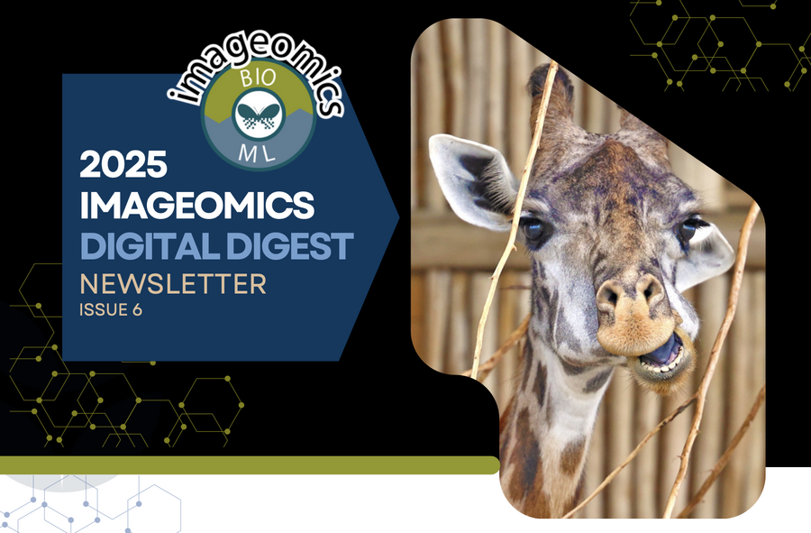

BioCLIP 2 is here, and it’s reshaping how we explore our world.
The latest Imageomics Digital Digest dives into how this powerful AI model helps researchers understand species traits, relationships, and biodiversity from over 200 million images.
Learn more about Imageomics drone research at The Wilds and Smart NatureLab fieldwork, while reaching out to the next generation of kids in STEM at Ohio State, and a Call for Papers at NeurIPS 2025 — click the image to read more.